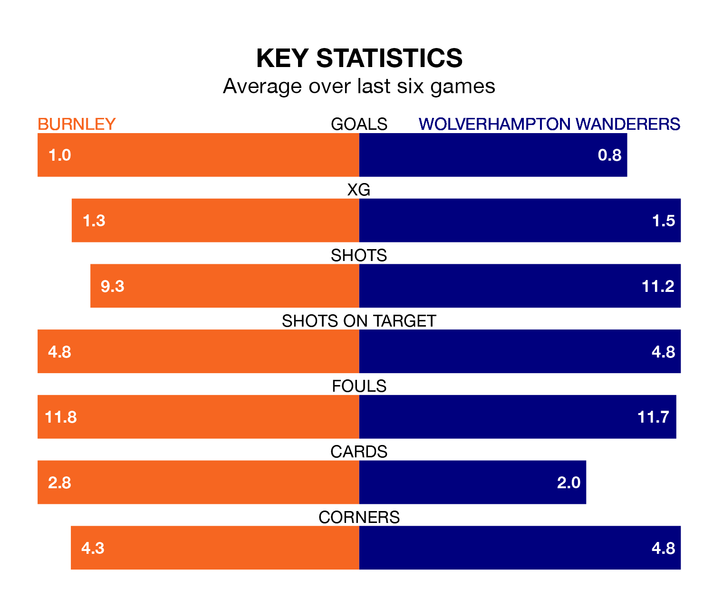

Wolverhampton Wanderers travel to Burnley on late Tuesday in the Premier League.
The visitors come into the game on the back of a defeat in their last match, having lost to Aston Villa 2-0 away.
The Clarets, meanwhile, drew their last match, 2-2 against Chelsea, with their goals scored by Josh Cullen and Dara O'Shea.
Burnley are 19th in the table after 30 games, of which they have won four and drawn six, earning 18 points.
Wolves are nine places ahead of the Clarets in 10th, with 12 wins and five draws putting them on 41 points.
In the last 10 years, Burnley and Wolves have played each other on 12 occasions. Burnley won four of them, Wolves three, and they drew five times.
On average, the Clarets scored 1.0 goal and Wolves 0.8 in those matches.
Their last meeting was on December 5, when Wolves won 1-0 at home.
The hosts are in disappointing form in the Premier League, with one win and two draws from their last six games.
With three wins and three losses over that period, the away side's form is better – they have taken nine points from 18, compared to Burnley's five.
With 31 goals in 30 games so far this season, Burnley are the league's third-lowest scorers with 1.0 goals per game. And they are conceding more than average, letting in 65 goals at a rate of 2.2 per game.
Wolves are also below average scorers, with 1.4 goals per game, compared to a league average of 1.6. They have conceded 1.6 goals per game.
Wolves's Pedro Neto is among the league's most creative players, racking up nine assists in 19 appearances so far this season, and holding fourth spot in the Premier League's assist charts.
For the Clarets, O'Shea and Lyle Foster have set up the most goals, having laid on three assists apiece to date.
Tuesday's match will be refereed by Thomas Bramall, who has taken charge of eight Premier League games so far this season, issuing two red cards and booking 42 players. He has awarded three penalties.
The last Burnley game Bramall refereed was a 2-0 away loss to Newcastle United on September 30. His last Wolves match was their 3-0 win at home against Everton on December 30.
Updated: 10:31 (UTC), 31/03/24